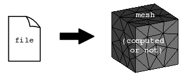

cfdmsh 4.0 documentation
cfdmsh 4.0 documentation cfdmsh 4.0 documentation


Imports into a mesh algorithms, hypotheses and group names from a file created with the ExportMeshConfiguration function.
This function reads the file and goes through the existing algorithms and hypotheses to find the ones having the same names as in the file, then it applies them to the mesh. After that, it creates all the sub-meshes and does the same (looks for existing algorithms and hypotheses and applies them to the sub-meshes). Finally, it looks into the geometrical shapes associated with the mesh the groups having the same names as in the file. When found, mesh groups are generated from the geometrical ones.
The default folder for the file is the home folder.
def ImportMeshConfiguration( mesh = None, file = "cfdmsh_msh" ):

| Name | Description | Type | GUI selection [?] | Selection by name [?] | Recursive [?] | Default value |
|---|---|---|---|---|---|---|
| mesh | The target mesh. | Mesh | yes | yes | yes | None |
| file | Name of the file to read. | String | - | - | - | "cfdmsh_msh" |
| dim Value [?] | single Value [?] | Type | Number | Name |
|---|---|---|---|---|
| - | - | - | - | - |
from cfdmsh import * # To adapt to the cfdmsh installation method
box1 = geompy.MakeBoxDXDYDZ(100, 100, 100)
box2 = geompy.MakeBoxDXDYDZ(50, 50, 50)
AddToStudy([box1, box2], "box")
group1 = geompy.CreateGroup(box1, geompy.ShapeType["FACE"])
geompy.AddObject(group1, 23)
group2 = geompy.CreateGroup(box1, geompy.ShapeType["FACE"])
geompy.AddObject(group2, 27)
group3 = geompy.CreateGroup(box1, geompy.ShapeType["FACE"])
geompy.UnionIDs(group3, [13, 33, 31, 3])
AddToStudy([group1, group2, group3], "group", father = box1)
ExportGeometricalGroups(box1, "group_example")
ImportGeometricalGroups(box2, "group_example")
mesh1 = smesh.Mesh(box1)
mesh2 = smesh.Mesh(box2)
algo = mesh1.Tetrahedron(algo = smeshBuilder.NETGEN_1D2D3D)
hypo = algo.Parameters()
hypo.SetMaxSize(15)
mesh1.Compute()
mesh1.GroupOnGeom(group1, typ = SMESH.FACE)
mesh1.GroupOnGeom(group2, typ = SMESH.FACE)
mesh1.GroupOnGeom(group3, typ = SMESH.FACE)
ExportMeshConfiguration(mesh1, "mesh_configuration_example")
ImportMeshConfiguration(mesh2, "mesh_configuration_example")
mesh2.Compute()
All the hypotheses and algorithms present in the file has to be also present in the study. Also, there must be, in the geometrical object associated to the target mesh, groups having the same name as the groups present in the file.
cfdmsh 4.0 documentation
tougeron-cfd.com © 2016